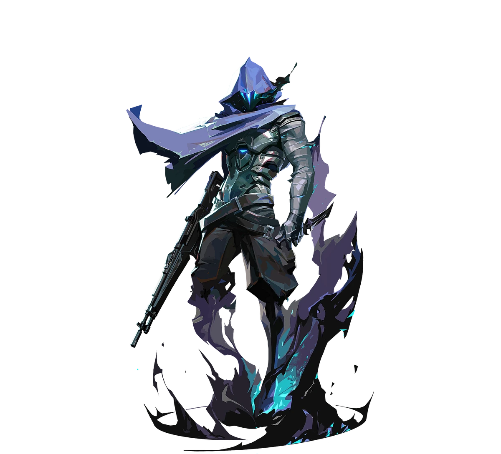
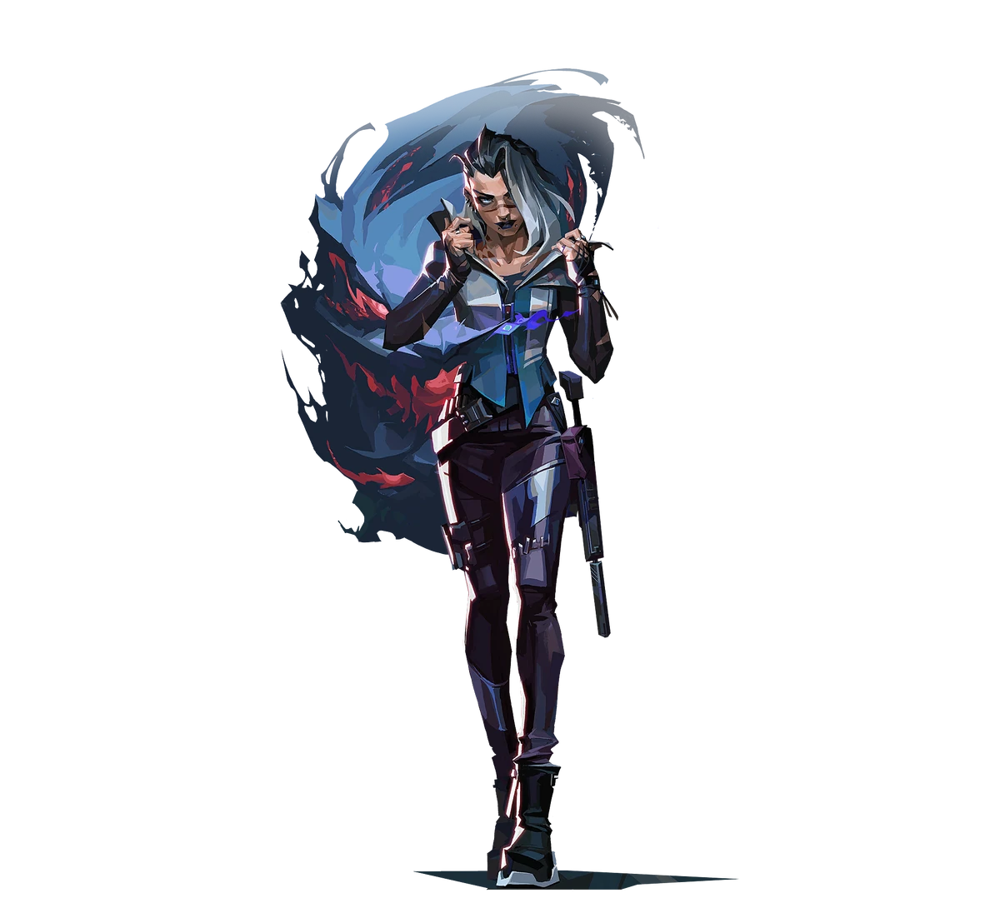

A taxa de escolha (pick rate) mostra em quantos mapas, em porcentagem, cada agente foi escolhido. Os dados abaixo consideram os 14 mapas jogados na fase de grupos até 27/09/2026 e ainda vão mudar ao longo do torneio.
Top 10 agentes
Taxa de escolha na fase de grupos (14 mapas)
Posição
Agente
Função
Taxa de escolha
Gráfico
1º
Omen
Controlador
79%
79%
2º
Fade
Iniciadora
54%
54%
3º
Chamber
Sentinela
46%
46%
4º
Yoru
Duelista
43%
43%
5º
Neon
Duelista
43%
43%
6º
Viper
Controladora
32%
32%
7º
Sova
Iniciador
32%
32%
8º
Raze
Duelista
25%
25%
9º
Sage
Sentinela
21%
21%
10º
Astra
Controladora
18%
18%
Também apareceram: Waylay e Cypher (18%), Harbor (14%), Phoenix, Vyse e Skye (11%), Jett e Tejo (7%).
Por que eles são metas?
Omen – o controlador da vez
Escolhido em quase 8 de cada 10 mapas. Suas fumaças,
o teleporte curto e a ultimate que atravessa o mapa dão flexibilidade
para ataque e defesa. Em Lotus, Ascent, Sunset e Split ele apareceu em
100% dos mapas.

Fade – informação e perseguição
A iniciadora turca revela inimigos com a Coruja e o Rastreador.
Foi escolha certa em Haven e Split e apareceu em 88% das partidas em Lotus.

Chamber – o sentinela atirador
Combina armadilha, teleporte e armas próprias (Headhunter e Tour de Force).
É usado quase sempre pelo jogador de Operator do time.
Quais agentes ainda não foram escolhidos?
Até agora ninguém usou Brimstone, Clove, Deadlock, KAY/O, Reyna, Gekko,
Iso e Miks. Clove era esperada no meta
mas ela não apareceu em nenhum mapa da fase de grupos até o momento.